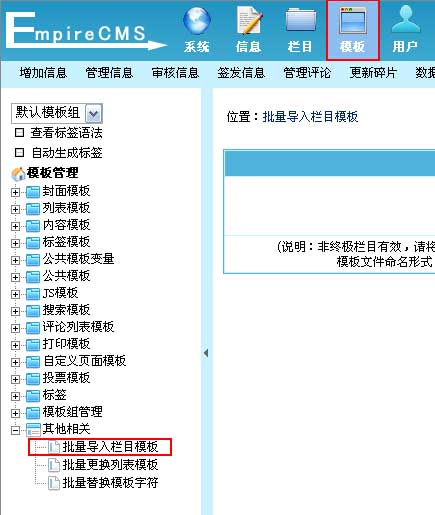
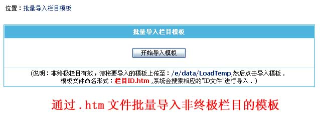
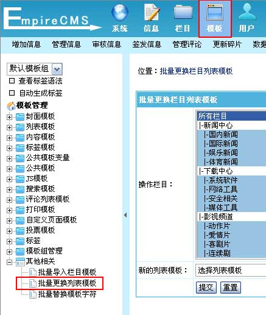
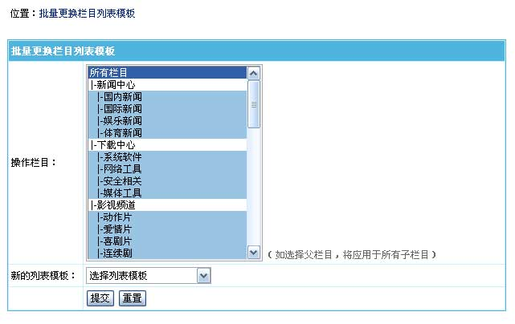
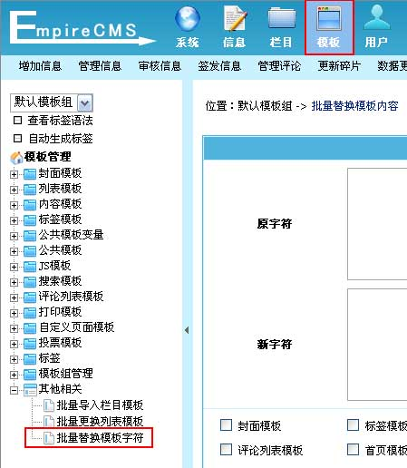
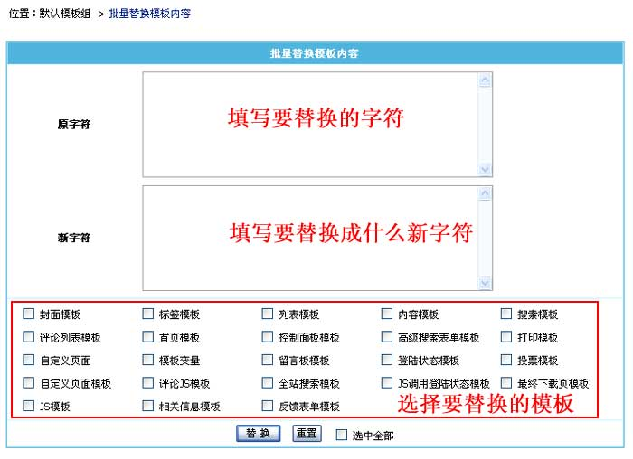

| 本节主要讲批量导入栏目模板、批量更换列表模板、批量替换模板字符功能。 批量导入栏目模板：将.htm文件批量导入到非终极栏目的模板。 批量更换列表模板：批量更换栏目使用的列表模板。 批量替换模板字符：批量替换模板中的内容。 |
|
||
| 一、批量导入栏目模板： |
| (一)、登录后台，单击“模板”菜单，选择“批量导入栏目模板”子菜单，进入批量导入栏目模板界面： |
|  |
| (二)、批量导入栏目模板界面： |
|  |
| 导入模板的步骤： |
| 1、先将要导入的模板文件上传至 e/data/LoadTemp 目录，文件命名形式为“栏目ID.htm”； 2、然后再通过本界面的“开始导入模板”进行批量导入操作。 |
| 二、批量更换列表模板： | ||||
| (一)、登录后台，单击“模板”菜单，选择“批量更换列表模板”子菜单，进入批量更换列表模板界面： | ||||
|  | ||||
| (二)、批量更换列表模板界面： | ||||
|  | ||||
|
| 三、批量替换模板字符： | ||||
| (一)、登录后台，单击“模板”菜单，选择“批量替换模板字符”子菜单，进入批量替换模板字符界面： | ||||
|  | ||||
| (二)、批量替换模板字符界面： | ||||
|  | ||||
|